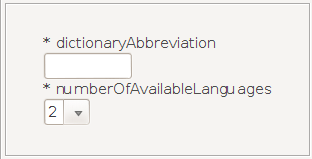
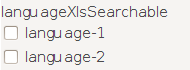
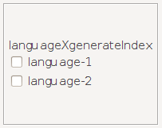
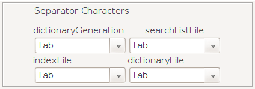
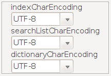
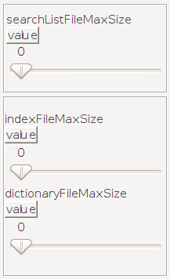
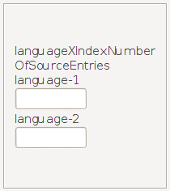

DictionaryForMIDs is customized via a set of properties in a file
called DictionaryForMIDs.properties. Each of the properties must be
provided unless otherwise noted.
The PropertiesEditor of
DictionaryForMIMs-Creator is a GUI that makes it easier to
create a DictionaryForMIDs.properties file. There, you will use
Check-boxes, Combo-boxes, Lists, Sliders and so on, to create the
properties file. When done, PropertiesEditor will save your
options in a DictionaryForMIDs.properties file.
To launch the
PropertiesEditor, go to the DictionaryGeneration tab and hit
the Create button.
infoText
infoText
Text that is shown on top of the info-dialog. Please provide in
this Text-area, information about the dictionary, like contact
information for someone who can be contacted concerning the
dictionary. That may be you (the person who set up this dictionary
into DictionaryForMIDs) and/or the maintainer of the dictionary
itself. So, include an email-address and/or homepage. Also provide a
copyright notice for the dictionary.
dictionaryAbbreviation and
numberOfAvailableLanguages

dictionaryAbbreviation
numberOfAvailableLanguages
dictionaryAbbreviation is a short abbreviation for identifying
the origin of the dictionary. This is an abbreviation for the name
of the organization or project where the dictionary comes from, e.g.
freedict for the dictionaries from freedict.org. This should be
preferably only a few characters long. JarCreator uses this property
to form the application name.
numberOfAvailableLanguages
defines how many languages are in the dictionary. For most
dictionaries this will be 2. Here the Combo-box gives you 2 choices:
2 or 3 languages. For each language the languageX-zzzzzzzzzzz need
to be defined as described below (X is a number starting from 1 to
numberOfAvailableLanguages, zzzzzzzzzzz represents the relevant
property name, e.g languageXDisplayText).
As an example, we
selected "2" in the Combo-box, so all the properties we
will be using are defined only for language1 and language2.
Selecting "3" would also define these properties for
language3.
languageXDisplayText
languageXDisplayText
Text that is used on the user interface to identify the language.
X needs to be replaced with the number of the column for the
language. For example:
language1DisplayText:
English
language2DisplayText: Portuguese
languageXFilePostfix
and
dictionaryGenerationOmitParFromIndex
languageXFilePostfix
dictionaryGenerationOmitParFromIndex
languageXFilePostfix is the text that is used
in file names to identify the search-file and the index files for a
language. This is typically a 3-letter text, such as Eng for
English; as defined in the ISO 3-letter codes available here.
As shown in the screen-shot, the Combo-box comes with some default
values. If your choice is not included in the default values, then
select CHOOSE MY OWN
in order to manually enter a
value.
dictionaryGenerationOmitParFromIndex:
DictionaryGeneration excludes text within curly brackets from
indexing ( the text within {{ and }} is not included in the index
files, see here
for more information). This behavior can be switched off by setting
dictionaryGenerationOmitParFromIndex to false. When
dictionaryGenerationOmitParFromIndex is set to false, then also the
text within {{ and }} will be included in the index.
The property
dictionaryGenerationOmitParFromIndex is optional. The default value
is true. To switch true/false use the Check-box, (select or
deselect).
languageXIsSearchable

languageXIsSearchable
This is a boolean property with either the value true or false, that is to say selected or deselected in this context since we are using Check-boxes. Select the Check-box when it is allowed to search for translations for that language. Normally this property is selected for bi-directional translation dictionaries. For lookup dictionaries, e.g. for an acronym dictionary, where it is only possible to search from the acronym to the explanation, this property is set to false (deselected) for the explanation language/column. For an example see the elements dictionary from the download section.
Also for an unidirectional dictionary, which for example only
translates from English to Portuguese (but not Portuguese to
English), you have to set languageXIsSearchable to false (deselect
the Check-box) for Portuguese.
This property is optional, the
default value is true.
languageXGenerateIndex

languageXGenerateIndex
This is a boolean property with either the value true or false,
that is to say selected or deselected in this context since we are
using Check-boxes. This tells DictionayGeneration whether to
generate an index for this language.
This property is optional,
the default value is true (selected).
Normally this property has
the same value as languageXIsSearchable.
languageXHasSeparateDictionaryFile
languageXHasSeparateDictionaryFile
This is a boolean property with either the
value true or false, that is to say selected or deselected in this
context since we are using Check-boxes. Select this Check-box when
there is a separate dictionaryXXX.csv file for this language (for an
explanation about the files, see section Files
generated by the DictionaryGeneration tool). Normally all
languages use the same dictionaryXXX.csv files, namely for those
dictionaries where expression ABC translates to XYZ and this means
that XYZ translates back to ABC. For dictionaries where ABC
translates to XYZ, however XYZ translates to DEF, this property is
set to true that is, the Check-box is deselected. For an example,
see the German-French freedict dictionary from the
download section.
For documentation, see here.
This
property is optional, the default value is false (deselected).
dictionaryGenerationSeparatorCharacter,
indexFileSeparationCharacter,
searchListFileSeparationCharacter
and
dictionaryFileSeparationCharacter

dictionaryGenerationSeparatorCharacter
indexFileSeparationCharacter
searchListFileSeparationCharacter
dictionaryFileSeparationCharacter
dictionaryGenerationSeparatorCharacter is the separation
character for the input dictionary file that is read by
DictionayGeneration.
indexFileSeparationCharacter,
searchListFileSeparationCharacter, dictionaryFileSeparationCharacter
are the separation character for the output csv files that are
generated by DictionayGeneration.
The separation character for
the above mentioned properties needs to be put in apostrophes when
manually writing/editing the DictionaryForMIDs.properties file. Can
be ',' or ';'. Can also be '\t' (backslash plus t) for a
tab-character.
This property is optional, the default value is \t
(tab-character). Here, in the PropertiesEditor, some default
values are provided in Combo-boxes. Just choose between these
values.
dictionaryGenerationLanguageXExpressionSplitString
dictionaryGenerationLanguageXExpressionSplitString
This is used by DictionaryGeneration as follows: when for a
language an expression actually contains several sub-expressions,
this property is set to the string that separates these
sub-expressions.
Example: the expression "to choose, to
select, to pick" contains three sub-expressions: (1) "to
choose", (2) "to select" and (3) "to pick".
By setting dictionaryGenerationLanguageXExpressionSplitString to ,
for this language, DictionaryGeneration will extract these 3
expressions. This is done by writing the Split-string for a
language, in the Text-Field that correspond to that language in the
PropertiesEditor.
This property is optional, the default
value is blank (nothing is entered in the Text-Field).
dictionaryGenerationInputCharEncoding
dictionaryGenerationInputCharEncoding
Character set encoding for the input dictionary file that is read by DictionaryGeneration.
Supported character set encodings are provided in the
Combo-box.
As you can see them on the screen-shot, they
are:
UTF-8
ISO-8859-1
US-ASCII
The default value is ISO-8859-1 but the first on the list is
UTF-8. It works fine also.
indexCharEncoding,
searchListCharEncoding
and
dictionaryCharEncoding

indexCharEncoding
searchListCharEncoding
dictionaryCharEncoding
These 3 properties define the character set encoding that is used for the output search-list file/index files/dictionary files.
Supported character set encodings are:
UTF-8
ISO-8859-1
US-ASCII
Note: on very old mobile/PDA devices UTF-8 may not be supported. normally recent models do support it.
languageXDictionaryUpdateClassName
languageXDictionaryUpdateClassName
This property defines for the DictionaryGeneration-tool a "DictionaryUpdate"-class that is used for a language. DictionaryUpdateClass changes the ways entries are stored when the tool converts an input dictionary file into the DictionaryforMIDs generated files. For details on the files created when a dictionary is generated, see Generating the files for DictionaryForMIDs.
For example: DictionaryUpdateEngDef removes unneeded words from
the indexes such as "the", "a", and "at".
These words are unneeded in the indexes and add unnecessary size to
the files. When a user performs a search, these words will still be
displayed in the definition, however.
All the available
DictionaryUpdate classes' names are provided in the Combo-boxes.
The property languageXDictionaryUpdateClassName is optional. Use
this property only if you really need it, otherwise set the selected
choice in the Combo-boxes. to NONE
languageXNormationClassName
This is the name of a Java class that is used to 'normate' words. Whereas DictionaryUpdateClass changes dictionary files only when the dictionary is generated, NormationClass affects the words that the user enters when searching.
For example: NormationGer parses the nonNormatedWord for the German 'Umlauts' (ä, ö, ü) and returns the word with the Umlaut-paraphrasing (ae, oe, ue). So the user can search for "Mädchen" or "Maedchen" and the translation will be found in both cases.
These changes in the dictionary files are done in 2 steps. First the DictionaryGeneration-tool calls the NormationClass to change the indexes to incorporate the phonetic changes (ä is changed to ae, for example). Then when the user performs a search, the NormationClass is called again to make the phonetic changes to match the changes that were made earlier with the DictionaryGeneration-tool.
Via Normation-classes it is possible to
provide language-specific search features and phonetic search. A lot
of power lies in these Normation classes !!
Normation classes are
available for several languages. For a list of available Normation
classes see here.
If you
intend to implement a new Normation class, see the documentation of
NormationClasshere.
All the
available Normation classes' names are provided in the Combo-boxes.
but the property languageXNormationClassName is optional
searchListFileMaxSize,
indexFileMaxSizeand
dictionaryFileMaxSize

searchListFileMaxSize
indexFileMaxSize
dictionaryFileMaxSize
Defines the size in bytes of the biggest search-list file/index
file/dictionary file, as generated by DictionaryGeneration. These
properties are automatically determined and set by
DictionaryGeneration, normally there is no longer a need to set
these properties manually.
However these properties need to be
manually defined when a dictionary is merged from two (or more)
different source dictionaries and DictionaryGeneration is run once
for each of these source dictionary (the values from the first run
would be overwritten by the second run). When these properties
are already manually set when DictionaryGeneration is run, then no
automatic generation for these properties is done. For the manual
values you must ensure that no search-list file/index
file/dictionary file is bigger than the property value, otherwise
some translations are not found. There is no problem if the value of
these properties is bigger than the actual maximum file size. For
example if you set the dictionaryFileMaxSize to 50000 even if the
biggest dictionary file is only 35000 bytes everything will work
correctly. However DictionaryForMIDs will allocate 50000 bytes of
heap memory, and keep in mind that specifically for older devices
heap memory is scarce.
Use the Sliders to adjust the values for these properties. If you
find it hard to enter a specific value with the sliders, choose no
matter the value and go on to the property preview/edit window by
hitting the Create the Properties File button. Once in the
properties preview/edit window, before saving the values to the
properties file, hit the Edit button below in order to be
able to edit the properties. Finally, identify the *Max-size
properties and manually modify the values provided by the sliders.
Below is a screen-shot of the properties preview/edit window. Hit
the Edit button and then modify the values in blue.
dictionaryGenerationMinNumberOfEntriesPerIndexFile
and
dictionaryGenerationMinNumberOfEntriesPerDictionaryFile
dictionaryGenerationMinNumberOfEntriesPerDictionaryFile
dictionaryGenerationMinNumberOfEntriesPerIndexFile
These define for DictionaryGeneration the number of entries (=
lines) per dictionary file and per index file.
These properties
are optional, the default value for
dictionaryGenerationMinNumberOfEntriesPerDictionaryFile is 200 and
the one for dictionaryGenerationMinNumberOfEntriesPerIndexFile is
500.
As a general hint, you could try to set these values so that
the size of a single directory file and the size of a single index
file do not exceed 100 KB (size defined by properties
searchListFileMaxSize, indexFileMaxSize and
dictionaryFileMaxSize).
If you are setting up a dictionary for
very old devices with very little heap memory, then set these values
low enough so that the biggest file does not exceed 10 KB for
example.
languageXIndexNumberOfSourceEntries

languageXIndexNumberOfSourceEntries
This property is automatically generated by DictionaryGeneration.
The value contains the number of 'begin of expression'-index
entries. This value gives the number of words/expressions that the
dictionary contains for languageX. The values of
languageXIndexNumberOfSourceEntries are shown in the Info-Dialog
(will be implemented in a future version).
Note that when you
merge a dictionary from two (or more) source dictionaries and
DictionaryGeneration is run once for each of these source
dictionaries, then you need to manually copy the entries for
languageXIndexNumberOfSourceEntries into the final
DictionaryForMIDs.properties file.
logLevel
The property logLevel is set in the file DictionaryForMIDs.jad (not DictionaryForMIDs.properties). It Allows to switch on/off debugging information. A logLevel of 0 turns debugging output off, a logLevel of 3 turns all debugging output on; the levels 1 and 2 turn some debugging output on.
languageXContentNN properties
With the languageXContentNN properties you can specify the content of your dictionary. For example you can specify that there is a pronunciation part, an explanation part, etc.
DictionaryForMIDs-Creator's PropertiesEditor
window has a languageXContentNN Properties window called
ContentProperties-Creator.
It makes it possible to create contentNN properties and pass them to
the PropertiesEditor
which will enable you to save them along with the other properties.
The PropertiesEditor
window is already large enough, incorporating the languageXContentNN
properties in it would render it's resolution larger than 1366X768.
That is why it was decided to create a separate application and
window called ContentProperties-Creator.
To launch this window hit the button on the screen-shot below.
To
see how to create languageXContentNN properties with the
PropertiesEditor
and the ContentProperties-Creator,
see the page dedicated to that here.
The
languageXContentNN properties are optional.
Here is a sample DictionaryForMIDs.properties file:
infoText: IDP (English - German), version 1.1 19Feb99: http://www.ilovelanguages.com/IDP/IDPfiles.html
dictionaryAbbreviation: IDP(Eng-Ger)
numberOfAvailableLanguages: 2
language1DisplayText: English
language2DisplayText: German
language1FilePostfix: Eng
language2FilePostfix: Ger
language1IsSearchable: true
language2IsSearchable: true
language1GenerateIndex: true
language2GenerateIndex: true
language1HasSeparateDictionaryFile: false
language2HasSeparateDictionaryFile: false
dictionaryGenerationSeparatorCharacter: '\t'
indexFileSeparationCharacter: '\t'
searchListFileSeparationCharacter: '\t'
dictionaryFileSeparationCharacter: '\t'
dictionaryGenerationOmitParFromIndex: true
dictionaryGenerationInputCharEncoding: UTF-8
indexCharEncoding: UTF-8
searchListCharEncoding: UTF-8
dictionaryCharEncoding: UTF-8
language1DictionaryUpdateClassName: de.kugihan.dictionaryformids.dictgen.dictionaryupdate.DictionaryUpdate
language2DictionaryUpdateClassName: de.kugihan.dictionaryformids.dictgen.dictionaryupdate.DictionaryUpdate
language1NormationClassName: de.kugihan.dictionaryformids.translation.normation.Normation.NormationEng
language2NormationClassName: de.kugihan.dictionaryformids.translation.normation.Normation.NormationGer
If you have any problem with setting up a new dictionary, just contact us and we will try to help you out!
|
Setting up a new Dictionary |
|
DictionaryUpdate |